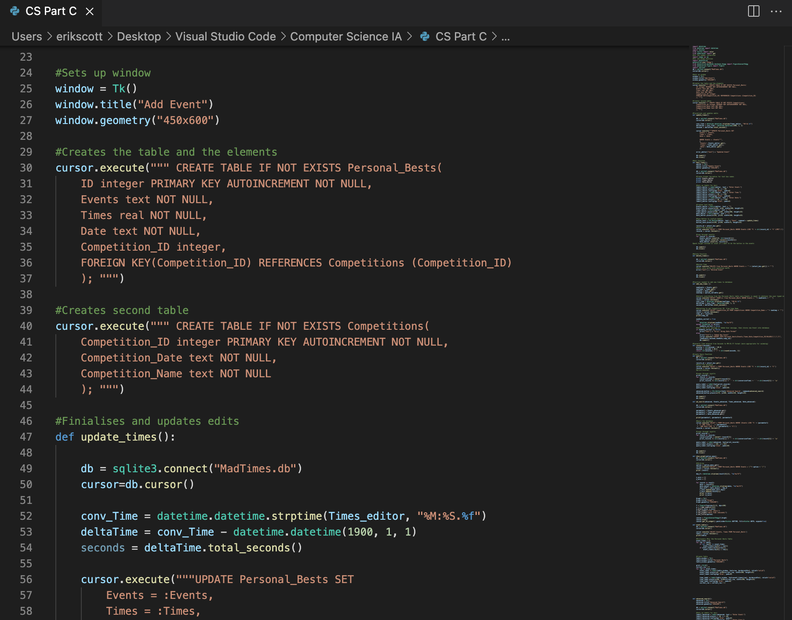

Past Experience
- Had Minimul Experiance with IT prior to moving to Australia
- First beganing studying computer related subjects in 2020
- At the start of Year 11 began studying Computer Science
Course Details

During Year 11 and 12, I studied Computer Science for the International Baccalaureate (IB).
Over the course of the year we had to learn about a number of computer processes , such as the machine insturction cycle, as well as hardware components of a compter.
Additionally, I learned how to code in the following computer languages:
- Python
- Java
- Pseudocode
- HTML and CSS
IB Project
As part of my course work I had to design a fully functioning database and GUI for my Year 12 Project. As I was most familiar with it I used Python and the application SQLite for my database to run on.
The primary goal of my database was:
- Create a database recieve Inputs for swimming times
- Create a GUI to act as a place to input these times and to export them in a visual format
- Expain the processes of the program in a report
